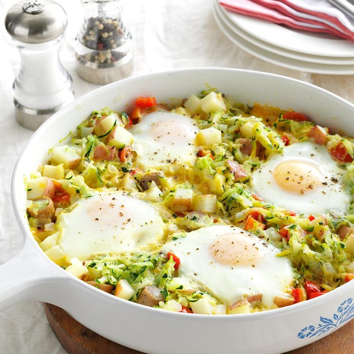

Zucchini Egg Skillet

Description
This tasty dish combines everything you need for that fresh start to your morning. Pretty basic from ingredients to its preparation, even a baby could make this! Let's get started!
ingredients
- Any type of oil you want! let's go! 2 tablespoons should be enough. Don't add too much now, america might just want to liberate your kitchen
- 2 medium sized potatoes
- Onions, lots and lots of onions
- 2 small zucchinis or cucumbers, I honestly can't tell the difference but let's go!